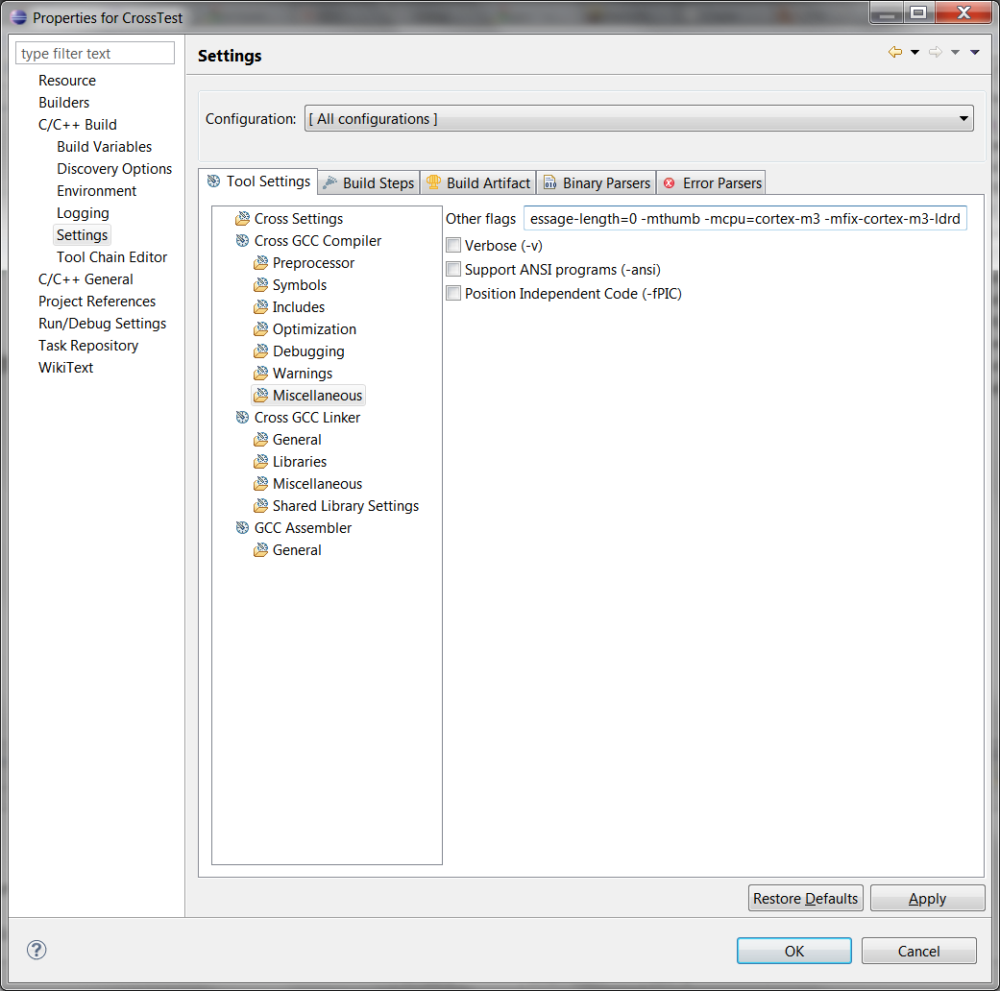

Esses são os passos utilizados para fazer funcionar o Eclipse CDT para programar em microcontroladores ARM. Este tutorial foi testado com microcontroladores STM32F103, mas também deve funcionar para outros tipos, inclusive ARM7TDMI, bastando mudar alguns parâmetros.
A idéia de usar o Eclipse puro, mesmo que dê mais trabalho que outras IDEs (mesmo as freeware), é que desta forma é possível customizá-lo inteiramente, com qualquer plugin disponível. Pode-se inclusive misturar outras linguagens no mesmo projeto (como por exemplo adicionar geradores de código feitos em Python). Além disso, todos os recursos nativos da própria IDE podem ser habilitados (algumas IDEs, mesmo as baseadas no Eclipse, desativam vários recursos para deixar "mais fácil").
Ao desenvolver este tutorial, também foi possível entender como todas as partes de um projeto funcionam, inclusive as partes "escondidas" pelas IDEs comerciais. Entendendo bem como tudo funciona, fica mais fácil corrigir qualquer problema que apareça e adicionar recursos, o que é praticamente impossível com IDEs fechadas.
Estas instruções incluem toda a configuração da IDE, de um toolchain livre e de uma interface JTAG. Este tutorial foi feito no Windows 7 64-bits em Inglês. Para sistemas de 32 bits e/ou em português, faça as modificações necessárias.
As versões dos aplicativos utilizados estão ao lado da menção de onde baixá-los, entre parênteses.
Caso queira baixar o template direto e começar logo a desenvolver, vá para a seção Projeto C/C++ completo.
Começando com o Eclipse
Baixe o Eclipse (recomendado a versão para C/C++ developers) do site http://eclipsesource.com/en/downloads/ (3.7 Indigo).
Extraia o arquivo para onde você desejar que fique a instalação do Eclipse e, se achar conveniente, crie um atalho no menu iniciar.
Para isto, copie um atalho do eclipse.exe para C:\Users\<user>\AppData\Roaming\Microsoft\Windows\Start Menu\Programs, substituindo <user> pelo nome do seu usuário.
Execute o Eclipse. A primeira tela que aparece é a da configuração do workspace. Selecione a pasta que você deseja colocar seus projetos. Se desejar trabalhar com apenas um workspace, selecione a opção "Use this as the default and do not ask again". Clique em OK. A tela seguinte, selecione a opção desejada para o UDC. Se não quiser enviar nenhum dado de uso para a Eclipse Foundation, selecione "Turn UDC feature off". Clique em "Finish".
Vá no menu Help->Install New Software...
No campo Work with, selecione "--All Available Sites--". Selecione os pacotes:
- Mobile and Device Development:
- C/C++ GCC Cross Compiler Support
- C/C++ GDB Hardware Debugging e clique em "Next" duas vezes. Selecione "I accept the terms of the license agreements" e clique em Finish. O Eclipse irá baixar e instalar os pacotes. Ao final da instalação, reinicie o Eclipse clicando em Restart Now na janela que irá aparecer.
Clique no botão "Workbench", à direita da tela.
Instale um toolchain para o processador desejado. Eu testei com o YAGARTO (23.12.2010) e o CodeSourcery G++ Lite for ARM EABI (2010.09-51 e 2011.03-42). O YAGARTO é um toolchain totalmente Open Source, enquanto o CodeSourcery é suportado por uma empresa de mesmo nome, que introduz melhorias no compilador. Desses dois, o mais simples de se usar é o CodeSourcery, que por isto será usado neste tutorial. Já o YAGARTO tem atualizações mais rápidas, sendo mais fácil de possuir o último GCC, porém é levemente mais difícil de instalar.
No site acima, baixe a versão EABI, que é a mais adequada para microcontroladores sem sistema operacional, os chamados "bare metal". Instale a partir do arquivo baixado, seguindo as instruções da tela. Caso você já tenha alguma versão do CodeSourcery instalada (como, por exemplo, se você tiver o CoIDE instalado) não é necessário baixar e instalar novamente, a menos que se deseje uma versão mais atualizada.
Baixe a biblioteca de periféricos padrão da ST para os microcontroladores STM32, em http://www.st.com/stonline/stappl/resourceSelector/app?page=resourceSelector&doctype=FIRMWARE&ClassID=1734 (baixei a versão 3.5.0).
Caso não ache ou o site não abra direito, vá em http://www.st.com e procure na caixa "search" por seu dispositivo específico. Neste caso achei a página http://www.st.com/internet/mcu/product/164487.jsp e baixei a biblioteca de lá.
Extraia para um local conhecido, por exemplo, workspace\STM32F10x_StdPeriph_Lib.
Este diretório será usado mais à frente nas configurações do projeto.
Um bom local para ele ficar é no mesmo workspace do projeto, pois assim a pasta pode ser acessada através de links relativos, como por exemplo ..\..\STM32F10x_StdPeriph_Lib.
Configurando o Adaptador JTAG
Esta operação pode ser feita caso o usuário tenha um adaptador JTAG compatível com a plataforma ARM.
O OpenOCD é uma das ferramentas disponíveis para debugging através de um dispositivo JTAG, porém há outros servidores disponíveis que podem ser utilizados de forma mais fácil. No entanto (ainda) não achei nenhum com a mesma flexibilidade do OpenOCD. Além disto, é possível compilar o OpenOCD para usar diretamente os drivers D2XX da FTDI. Isso, porém, requer uma compilação devido à licença das bibliotecas binárias da FTDI não permitirem sua redistribuição.
Para começar, devemos conectar o dispositivo JTAG. Este deve ser compatível com o OpenOCD, ou este método não funcionará. No meu caso, eu conectei um GuruPlug JTAG Board, que na verdade é o mesmo hardware do dispositivo JTAG embutido no Sheevaplug. Ele é baseado no FT2232, um chip USB->Serial/FIFO.
Há diversos dispositivos JTAG baseados neste chip, incluindo:
- Sheevaplug JTAG
- CoLink (não suportado pelo OpenOCD 0.4.0 sem patches)
- Bus Blaster
- Olimex ARM-USB-OCD
- Amontec JTAGkey (1 e 2)
Abra o Device Manager (Gerenciador de Dispositivos). Caso seja desejado, instale o driver VCP da FTDI (Virtual COM Port) para o conversor serial B. Isto instalará a interface B do FT2232, que serve como um conversor USB-serial.
Baixe o libusb (1.2.4.0) binário, do site http://www.libusb.org/wiki/libusb-win32 (link direto para download: http://sourceforge.net/projects/libusb-win32/files/libusb-win32-releases/).
Extraia para alguma pasta, vá no subdiretório bin e execute o arquivo inf-wizard.exe.
Na janela que abrir, clique "Next".
Na próxima janela, selecione o dispositivo adequado.
No meu caso, foi o SheevaPlug JTAGKey FT2232D B (Interface 0). Foi selecionado a Interface 0 pois esta é a interface FIFO do FT2232 e normalmente é a usada para o JTAG. A Interface 1 costuma ser a saída serial (UART).
Clique em "Next" nas duas próximas janelas.
Irá abrir uma janela para salvar um arquivo .inf.
Este é o arquivo que vai associar o driver ao dispositivo.
Ele pode ser apagado depois da instalação.
Na próxima janela, clique em "Install Now". O controle de acesso do Windows irá pedir autorização. Autorize clicando em "Yes". Após isso, o Windows reclamará que o driver não é assinado. Clique em "Install this driver software anyway" ("Instalar este software de driver mesmo assim").
Irá aparecer uma janela escrito "Installation successful". Clique em OK. O inf-wizard fechará.
Para confirmar que a instalação ocorreu sem problemas, vá no Device Manager. No item da árvore "libusb-win32 devices" aparecerá o dispositivo configurado.
Baixe o OpenOCD (0.4.0) para Windows. O site original do projeto OpenOCD é http://openocd.berlios.de/web/, porém este é feito originalmente para Linux. Para encontrar uma versão para Windows, vá em http://www.freddiechopin.info/index.php/en/download/category/4-openocd.
Abra o arquivo e execute o instalador openocd.msi.
Instale o pacote seguindo as instruções.
Teste se a instalação ocorreu sem problemas.
Para isto, conecte o JTAG à placa com o alvo e abra a linha de comando (cmd.exe).
Digite:
openocd -f interface/sheevaplug.cfg -f target/stm32.cfg
Esta é a linha para o meu dispositivo JTAG (sheevaplug) e o meu alvo (um microcontrolador ARM do tipo STM32).
Para saber quais já existem interfaces e alvos pré-configurados no OpenOCD, olhe na pasta de instalação do OpenOCD, no meu caso C:\Program Files (x86)\OpenOCD\0.4.0.
Ali há as subpastas interface e target, correspondentes aos adaptadores JTAG e os chips suportados.
O firewall do Windows pode pedir autorização para ele acessar a rede. Permita o acesso, ou haverá problemas para acessar o servidor do OpenOCD.
A saída do comando acima deve ser algo como:
Open On-Chip Debugger 0.4.0 (2010-02-22-19:05)
Licensed under GNU GPL v2
For bug reports, read
http://openocd.berlios.de/doc/doxygen/bugs.html
2000 kHz
1000 kHz
jtag_nsrst_delay: 100
jtag_ntrst_delay: 100
Info : clock speed 1000 kHz
Info : JTAG tap: stm32.cpu tap/device found: 0x3ba00477 (mfg: 0x23b, part:
0xba00, ver: 0x3)
Info : JTAG tap: stm32.bs tap/device found: 0x16410041 (mfg: 0x020, part:
0x6410, ver: 0x1)
Info : stm32.cpu: hardware has 6 breakpoints, 4 watchpoints
Configurando o Eclipse para usar o adaptador JTAG via OpenOCD
No Eclipse, abra uma perspectiva C/C++, vá no menu Run->External Tools->External Tools Configurations...
Na janela que aparece, vá no painel esquerdo, selecione "Program" e clique no ícone "New launch configuration".

No painel à direita, escolha um nome significativo e coloque no campo "Name", por exemplo, "OpenOCD Server".
Em "location", coloque o caminho para o executável do OpenOCD, por exemplo,
C:\Program Files (x86)\OpenOCD\0.4.0\bin\openocd.exe
Em "Working Directory" coloque
${workspace_loc}\${project_path}\Debug
Em "arguments", coloque
-f interface/sheevaplug.cfg -f target/stm32.cfg
ou as opções para seu adaptador e microcontrolador, conforme visto anteriormente.
Cheque na aba "Build" se a opção "Build before launch" está desativada.

Clique em "Apply" e "Close". Desta forma, o OpenOCD poderá ser executado diretamente através do ícone de "External Program", que fica ao lado do ícone "Run".
Nota:
Como o diretório de trabalho usa a variável ${project_path}, é necessário que o projeto ou um dos arquivos do projeto do qual se deseja fazer o debug esteja selecionado antes de clicar no ícone de Run.
Caso deseje associar a chamada externa ao OpenOCD ao projeto, substitua o ${project_path} pelo diretório do projeto dentro do workspace.
Vá na aba Common, no campo Save as selecione Shared file e coloque o caminho para dentro do projeto.
Para debugar um programa, deve-se criar uma configuração de debug para cada projeto, o que será explicado mais abaixo.
Flash Loader Demonstrator (opcional)
O Flash Loader Demonstrator é um utilitário para se programar o STM32 a partir de seu bootloader serial (embutido no microcontrolador).
Para baixá-lo, vá na página do seu microcontrolador no site da ST e procure o link para STM32F101xx and STM32F103xx Flash loader demonstrator: Contains the Demo GUI, Command line and header source files.
Baixe o arquivo, extraia e instale a partir do programa Flash_Loader_Demonstrator_v2.2.0_Setup.exe.
Siga as instruções na tela, com atenção ao local onde ele será instalado.
Para acionar o Flash Loader Demo direto a partir do Eclipse, vá em Run->External Tools->External Tools Configurations...
Selecione "Program" e clique no ícone "New launch configuration".
Dê um nome ao utilitário, por exemplo "Flash Loader".
Em "Location", coloque o caminho para o utilitário da ST, por exemplo,
C:\Program Files (x86)\STMicroelectronics\Software\Flash Loader Demonstrator\STMicroelectronics flash loader.exe
Se desejado, preencha em "Arguments" as opções para o utilitário, caso deseje executá-lo como se fosse a partir da linha de comando.
Para evitar que o programa compile toda vez que se executar esta ferramenta, vá na aba "Build" e desative a caixa "Build before launch".
Configurando um projeto no Eclipse 3.7 (Indigo)
Nota:
Este tutorial já está adaptado para utilizar o C++ no projeto.
Crie um novo projeto no menu File->New->C++ Project. Se isto não funcionar, vá em File->New->Project. Na janela que aparece, selecione C/C++->C++ Project.
Coloque um nome no projeto em "Project name". Em "Project type", selecione Executable->Cross-Compile Project. Em "Toolchain", escolha "Cross GCC". Clique em "Next".
Em "Command prefix", coloque arm-none-eabi- (note o hífen ao final).
Em "Command path", coloque o caminho para os executáveis do CodeSourcery, no meu caso foi C:\Program Files (x86)\CodeSourcery\Sourcery G++ Lite\bin.
Clique em "Next".
Caso deseje, você pode desativar uma das configurações (Debug ou Release). Clique em "Advanced settings...".
No painel à esquerda, vá em C/C++ Build->Tool Chain Editor. Na esquerda, clique no botão "Select Tools...".
Na janela que abre, Selecione no painel da esquerda o item "GCC Assembler" e clique no botão "Add tool -->". O item passará para o painel da direita. Clique em OK.
No topo da janela, mude a opção "Configuration:" para "Release" e repita este passo (se for o caso).
Mude a opção "Configuration:" para "[ All Configurations ]", de forma que as configurações sejam válidas tanto para Debug quanto para Release. No painel da esquerda, vá no item "C/C++ Build". No campo "Builder type" selecione a opção "Internal builder"
Caso deseje, vá na aba "Behaviour" e selecione a opção "Use parallel build" e "Use optimal jobs number". Esta opção divide o trabalho da compilação nos vários processadores do computador, caso haja mais de um. Isso acelera o processo de compilação, porém pode trazer alguns tipos de problemas, tipo mensagens de erro fora de ordem (mas eu uso mesmo assim).
Vá no item C/C++ Build->Settings. Na aba "Tool Settings", item Cross GCC Compiler->Symbols, adicione na lista "Defined Symbols (-D)", o item
STM32F10X_MD
para Medium Devices, ou o referente à densidade do chip usado (STM32F10X_HD para High-density devices), de acordo com os #defines do arquivo
workspace\STM32F10x_StdPeriph_Lib\Libraries\CMSIS\CM3\DeviceSupport\ST\STM32F10x\stm32f10x.h
Coloque a mesma opção em Cross G++ Compiler->Preprocessor na lista "Defined Symbols (-D)".
Em ambos os compiladores, vá no subitem "Includes" e adicione no campo "Include paths (-I)" os seguintes itens:
${workspace_loc:/${ProjName}/inc}
../../STM32F10x_StdPeriph_Lib/Libraries/STM32F10x_StdPeriph_Driver/inc/
../../STM32F10x_StdPeriph_Lib/Libraries/CMSIS/CM3/CoreSupport
../../STM32F10x_StdPeriph_Lib/Libraries/CMSIS/CM3/DeviceSupport/ST/STM32F10x
Note que alguns caminhos começam com ../../STM32F10x_StdPeriph_Lib.
Este é o caminho relativo para a pasta com a biblioteca da ST, a partir do diretório de build.
Ajuste adequadamente, de acordo com a posição do projeto e da biblioteca, ou deixe com o caminho absoluto.
Deixei com o caminho relativo para simplificar caso o diretório do workspace mude de lugar.
O primeiro caminho aponta para o diretório inc, que será criado para armazenar os arquivos de headers.
Também inclua no campo "Include files (-include)" o arquivo
"${workspace_loc:/${ProjName}/inc/stm32f10x_conf.h}"
Se desejado, vá em todos os compilers->Optimization e ajuste as opções de otimização.
Por exemplo "Optimization level=Optimize for size (-Os)", que reduz o tamanho do código gerado (em troca de performance, então pode ser melhor usar o -O2).
Também pode ser possível reduzir o tamanho do código ao se eliminar código morto (não utilizado) colocando-se no campo "Other optimization flags" as opções
-ffunction-sections -fdata-sections
e indo no item em Cross G++ Linker->Miscellaneous e colocar no campo "Other options (-Xlinker [option])" a opção para remover as seções não utilizadas
--gc-sections
Voltando ao Cross GCC Compiler, vá no sub-item "Miscellaneous" e adicione no campo "Other flags" as opções
-mthumb -mcpu=cortex-m3 -mfix-cortex-m3-ldrd
Opcionalmente, adicione também a opção -std=gnu99 para suportar as extensões GNU99 da linguagem C.
Assim, a linha inteira fica da seguinte forma:
-c -fmessage-length=0 -mthumb -mcpu=cortex-m3 -mfix-cortex-m3-ldrd -std=gnu99
Para C++, este parâmetro seria -std=gnu++0x, e para evitar código extra referente a exceções, podemos usar as opções -fno-exceptions -fno-rtti, como visto na página sobre C++.
Aproveite e copie desta página o arquivo mini_cpp.cpp para o projeto, por exemplo para a pasta lib. Caso você também precise utilizar o operador new, também copie o arquivo syscalls.c.
Fica a linha inteira assim:
-c -fmessage-length=0 -mthumb -mcpu=cortex-m3 -mfix-cortex-m3-ldrd -std=c++0x -fno-exceptions -fno-rtti

Caso queira incluir bibliotecas pré-compiladas, faça isso no sub-item "Libraries".
Por exemplo, caso você tenha pré-compilado a biblioteca da ST, inclua (por exemplo) no campo "Libraries (-l)", o item stdPeriphLibs e adicione ao campo "Library search path (-L)" o item
../../STM32F10x_StdPeriph_Lib
No sub-item "Miscellaneous", coloque em "Linker flags":
-mthumb -mcpu=cortex-m3 -mfix-cortex-m3-ldrd -Wl,-Map=\${ProjName}.map -Wl,-cref -T ..\..\STM32F10x_StdPeriph_Lib\Project\STM32F10x_StdPeriph_Template\TrueSTUDIO\STM3210B-EVAL\stm32_flash.ld
O arquivo indicado após a opção -T é um linker script para o STM32F103RB.
Para utilizar outro chip, pode-se procurar em outros exemplos de projetos ou copiar o arquivo para a pasta do projeto, alterar as linhas de interesse e o caminho do script do linker nas preferências do projeto.
Por exemplo, para o STM32F103RE, pode-se trocar o caminho de STM3210B-EVAL para STM3210E-EVAL.
Uma rápida comparação entre os projetos para placas STM3210B-EVAL e STM3210E-EVAL mostra que as linhas mais importantes são a 36, 45 e 46, referentes aos tamanhos de FLASH e RAM.
Também podem ser usados outros linker scripts que podem ser baixados da internet, conforme a necessidade. Outra opção é copiar este arquivo para a pasta do projeto, o deixaria o projeto auto-contido (com todos os arquivos necessários) e permitiria mudanças específicas para o projeto atual.
Vá agora no item "GCC Assembler" e mude o campo "Command" para arm-none-eabi-as.
No sub-item "General", no campo "Assembler flags" coloque
-mthumb -mcpu=cortex-m3
Agora vá na aba "Build Steps", coloque no campo "Post-build steps->Command" a linha:
../post_build.bat ${BuildArtifactFileName} ${ProjName}
No diretório do projeto, crie um arquivo chamado post_build.bat com o seguinte conteúdo:
post_build.bat
1 2 3 4 | arm-none-eabi-objdump -h -S %1 > "%2.lst"
arm-none-eabi-objcopy -O ihex %1 "%2.hex"
arm-none-eabi-objcopy -O binary %1 "main.bin"
arm-none-eabi-size --format=berkeley "%2.hex" %1
|
Vá na aba "Build Artifact" e coloque como "Artifact extension" o texto elf.
Isso é feito para facilitar a identificação dos arquivos construídos.
No painel da esquerda, vá em C/C++ Build->Discovery Options.
Para cada uma das configurações (Debug e Release), vá em "Discovery profiles scope", selecione "Configuration-wide".
Vá no campo "Discovery profile options->Compiler invocation command" e troque para arm-none-eabi-g++.
Logo abaixo, em "Compiler invocation arguments", onde está specs.c, coloque specs.cpp.
Clique em OK e em seguida em Finish. Isso terminará de criar o projeto (ainda sem nenhum arquivo).
Opcional: Para fins de organização, crie pastas para separar os tipos de arquivos.
Neste caso, criei inc, src e lib, sendo que o src e o lib eu criei como source folder.
Vá na pasta
STM32F10x_StdPeriph_Lib\Libraries\CMSIS\CM3\DeviceSupport\ST\STM32F10x\startup\TrueSTUDIO
e copie o arquivo correspondente ao seu dispositivo, por exemplo startup_stm32f10x_md.s para a pasta lib do projeto.
Renomeie este arquivo para ter uma extensão .S (maiúsculo) ou .asm (o builder do Eclipse não reconhece a extensão .s como um arquivo a ser compilado).
Copie os arquivos .h e .c da pasta
STM32F10x_StdPeriph_Lib\Project\STM32F10x_StdPeriph_Template
para a pasta do projeto.
Separe respectivamente nos diretórios inc e src, exceto o system_stm32f10x.c, que pode ser colocado na pasta lib.
Isto é feito somente para fins de organizacão, mas pode ficar em qualquer pasta que seja source folder.
Não é necessário copiar os arquivos das sub-pastas, a menos que se deseje copiar um dos linker scripts existentes nessas pastas.
Caso deseje que o microcontrolador opere a uma velocidade diferente de 72MHz, abra o arquivo system_stm32f10x.c, comente a linha
#define SYSCLK_FREQ_72MHz 72000000
e descomente a linha da velocidade desejada.
Em algumas placas pode haver um bug que pode fazer com que o microcontrolador fique com a velocidade diferente do previsto, caso o cristal não se estabilize a tempo.
Para corrigí-lo, dentro da função SetSysClockTo72(void) (ou equivalente para outras velocidades) mude as referências HSE_STARTUP_TIMEOUT para HSE_STARTUP_TIMEOUT*2:
} while((HSEStatus == 0) && (StartUpCounter != HSE_STARTUP_TIMEOUT*2));
Isso dará mais tempo para o cristal estabilizar.
No arquivo stm32f10x_conf.h, comente os periféricos que não serão usados no projeto e descomente os que serão usados.
Caso seja necessário e não haja uma biblioteca pré-compilada para isto, copie os arquivos .c usados da biblioteca da ST para a pasta lib.
Alternativamente estes arquivos podem ser só incluídos virtualmente, clicando e arrastando diretamente para a árvore de arquivos do Eclipse e selecionando "Link to files".
Estes arquivos estão na pasta
STM32F10x_StdPeriph_Lib\Libraries\STM32F10x_StdPeriph_Driver\src
Para teste do sistema, pode ser usado o arquivo main.cpp do exemplo em anexo, que é uma forma de blinky (pisca-pisca de LED) bem simplificado.
A árvore de pastas ficará desta forma:
Esta pasta serve como um bom modelo para ser copiado a cada projeto novo, para evitar a necessidade de reconfigurar o projeto toda hora. Uma pasta completa pode ser encontrada nos anexos. Também é possivel criar um template da forma descrita em http://help.eclipse.org/helios/index.jsp?topic=/org.eclipse.cdt.doc.isv/guide/projectTemplateEngine/Howtoregistertemplates.html, porém isto não é realmente necessário.
Configurando o projeto para usar o OpenOCD
Vá em no menu Run->Debug Configurations...
Na lista da esquerda, clique no item "GDB Hardware Debugging" e clique no botão "New launch configuration".
Dê um nome à configuração, no campo "Name".
Caso deseje, pode-se desabilitar a construção automática do programa, selecionando a opção "Disable auto build", na aba "Main".
Vá na aba "Debugger", em "GDB Command", coloque arm-none-eabi-gdb.
Certifique-se que a opção "Use remote target" está ativada e em "JTAG Device", mantenha "Generic TCP/IP", mas troque o "Port number" para 3333. Opcionalmente pode-se ativar também a opção "Force thread list update on suspend".
Vá na aba "Startup", desabilite as opções "Reset and Delay (seconds)" e "Halt" e na caixa logo abaixo, coloque
monitor reset halt
monitor flash probe 0
monitor stm32x mass_erase 0
monitor flash write_bank 0 main.bin 0
monitor reset halt
Desabilite a caixa "Load image"
Opcional: caso deseje parar a execução antes do programa do usuário iniciar (na entrada da função main()), habilite a opção "Set breakpoint at:" e digite main na caixa ao lado.
Importante!
Para executar o debug desta forma, a placa deve estar com BOOT0=0, ou seja, em modo de execução.
Do contrário a placa entrará no bootloader e o núcleo do microcontrolador entrará nos endereços 0x1fffffff.
Caso realmente deseje operar com BOOT0=1 selecionado, é possível, de forma dependente do microcontrolador.
Para isto, selecione a caixa "Set program counter at (hex)" e escreva ao lado o endereço do Reset_Handler.
No caso do STM32, o valor é 08000004.
Finalmente, na linha logo antes do botão Apply, verifique se está selecionado "Using Standard GDB Hardware Debugging Launhcer". Caso não esteja, selecione "Select other". Na caixa que aparecer, clique em "Change workspace settings" e vá em GDB Hardware Debugging->[Debug]. Na caixa ao lado (Preferred Launcher) marque "Standard GDB Hardware Debugging Launhcer".
Para que esta configuração de debug fique associada ao projeto, vá na aba "Common" e selecione a opção "Shared file", selecionando a pasta do projeto ao lado. Assim, esta configuração de debug só ficará disponível quando o projeto estiver aberto. Para completar, selecione "Debug" na caixa "Display in favorites menu", para a configuração ficar disponível no botão de debug.
Testando o GDB
Com o OpenOCD funcionando, é possível testar a funcionalidade do GDB para o carregamento e execução de um programa na placa.
Para isto, vá na linha de comando cmd.exe, vá até a pasta do projeto e execute (por exemplo para um projeto chamado blinky):
cd Debug
arm-none-eabi-gdb blinky.elf
Isso abrirá a linha de comando do GDB, indicada por (gdb) no início da linha:
GNU gdb (Sourcery G++ Lite 2011.03-42) 7.2.50.20100908-cvs
Copyright (C) 2010 Free Software Foundation, Inc.
License GPLv3+: GNU GPL version 3 or later <http://gnu.org/licenses/gpl.html>
This is free software: you are free to change and redistribute it.
There is NO WARRANTY, to the extent permitted by law. Type "show copying"
and "show warranty" for details.
This GDB was configured as "--host=i686-mingw32 --target=arm-none-eabi".
For bug reporting instructions, please see:
<https://support.codesourcery.com/GNUToolchain/>...
Reading symbols from d:\workspace\chavant-imu\debug\ChaVANT-IMU.elf...done.
(gdb)
A partir daí, podemos digitar os comandos do GDB.
As linhas que começam com monitor indicam que o comando será enviado para o monitor, que neste caso é o OpenOCD.
Desta forma podemos também executar comandos do OpenOCD diretamente pelo GDB.
Começe então, conectando-se ao OpenOCD (este já deve estar executando):
target remote localhost:3333
Reinicie o microcontrolador e coloque-o em estado de halt para que operações como a programação possam ser feitas:
monitor reset halt
Carregue o programa com
monitor flash probe 0
monitor stm32x mass_erase 0
monitor flash write_bank 0 main.bin 0
E comece a execução do programa com
monitor reset
Para pausar o programa:
monitor halt
Isso pausará o programa e mostrará em qual instrução o programa está parado na variável pc. Para ver qual linha isso corresponde no código C++ (junto com as linhas próximas), digite
l
E para voltar à execução do programa:
monitor resume
Convertendo um projeto C para C++
O Eclipse deveria poder converter um projeto para C para C++ e vice-versa indo no menu File->New->Convert to a C/C++ Project (Adds C/C++ Nature). No entanto, isto não funcionou comigo, pois o projeto não apareceu na caixa Candidates for conversion na janela que aparece.
Para resolver isto, feche o projeto, vá na sua pasta e edite o arquivo .project.
Procure pelo tag <natures> (perto do final do arquivo) e adicione a seguinte linha:
<nature>org.eclipse.cdt.core.ccnature</nature>
Abra novamente o projeto e ele já será um projeto C++.
Anexos
Programa de teste básico em C (Blinky)
Caso deseje um main.c mais simples para começar, com um LED piscando a cada aproximadamente 1s, use o código abaixo:
main.c
1 2 3 4 5 6 7 8 9 10 11 12 13 14 15 16 17 18 19 20 21 22 23 24 25 26 27 28 29 30 31 32 33 34 35 36 37 38 39 40 | /*
* main.c
*
* Author: Ronan Alves da Paixão
* <ronan@dapaixao.com.br>
* http://ronan.dapaixao.com.br
*/
#define LED_PORT GPIOC
#define LED_PIN (GPIO_Pin_6 | GPIO_Pin_7)
#define LED_RCC RCC_APB2Periph_GPIOC
#define LED_ClockCmd RCC_APB2PeriphClockCmd
void Delay(volatile uint32_t nCount);
int main(void)
{
GPIO_InitTypeDef GPIO_InitStructure;
LED_ClockCmd(RCC_APB2Periph_GPIOC, ENABLE);
/* Configura o(s) pino(s) GPIO_LED */
GPIO_InitStructure.GPIO_Pin = LED_PIN;
GPIO_InitStructure.GPIO_Mode = GPIO_Mode_Out_PP;
GPIO_InitStructure.GPIO_Speed = GPIO_Speed_50MHz;
GPIO_Init(LED_PORT, &GPIO_InitStructure);
while (1)
{
LED_PORT->ODR ^= LED_PIN;
Delay(500);
}
return 0;
}
void Delay(volatile uint32_t nCount)
{
nCount = nCount*(SystemCoreClock/1000/3);
for(; nCount != 0; nCount--);
}
|
Projeto C/C++ completo
Baixe um projeto C/C++ completo no arquivo stm32_cpp_template.zip.
Para importá-lo para o workspace no Eclipse, verifique se já não existe algum projeto chamado STM32_CPP_Template.
Se houver, renomeie-o.
Vá em File->Import. Na janela que aparecer, selecione "Existing Projects into Workspace" e clique em Next.
Na janela Import, selecione a opção "Select archive file". No campo ao lado, coloque o nome do arquivo com caminho completo ou clique em Browse e encontre-o. O projeto será selecionado no campo "Projects". Clique em Finish.
Renomeie o projeto para o nome desejado, por exemplo Blinky.
Vá no menu Run->Debug configurations....
Selecione a configuração GDB Hardware Debugging->STM32 Template Debug.
No campo Name, renomeie a configuração para um nome significativo para o projeto, por exemplo Blinky Debug.
Troque o campo "C/C++ Application" para o arquivo ELF gerado, por exemplo Debug/Blinky.elf.
Caso o projeto já tenha sido construído, basta clicar no botão Search Project e selecionar o arquivo ELF gerado.
Clique no botão Apply.
O novo projeto já estará pronto para ser usado.
Referências
- http://sourceforge.net/apps/mediawiki/gnuarmeclipse/index.php?title=Plug-in_Installation
- http://www.makingthings.com/wiki/creating-an-eclipse-project
- http://fun-tech.se/stm32/gcc/compile_blinky.php
- http://fun-tech.se/stm32/OpenOCD/index.php
- https://sites.google.com/site/stm32discovery/open-source-development-with-the-stm32-discovery/getting-hardware-debuging-working-with-eclipse-and-code-sourcey
- http://openocd.berlios.de/doc/html/Flash-Commands.html
- http://openocd.berlios.de/doc/html/CPU-Configuration.html
- https://sites.google.com/site/stm32discovery/open-source-development-with-the-stm32-discovery/setting-up-eclipse-for-stm32-discovery-development
- http://electrotormentor.blogspot.com/2011/04/configuring-eclipse-for-stm32.html
- http://betterexplained.com/articles/debugging-with-gdb/
- http://embeddedfreak.wordpress.com/2009/02/10/removing-unused-functionsdead-codes-with-gccgnu-ld/
- http://help.eclipse.org/indigo/index.jsp?topic=/org.eclipse.cdt.doc.user/tasks/cdt_t_add_custom_persp.htm
- http://avi.hobby-site.org:8888/wiki/index.php/Microcontrollers_&_the_STM32
- http://www.sciencezero.org/index.php?title=ARM:_Cortex-M3_Thumb-2_instruction_set